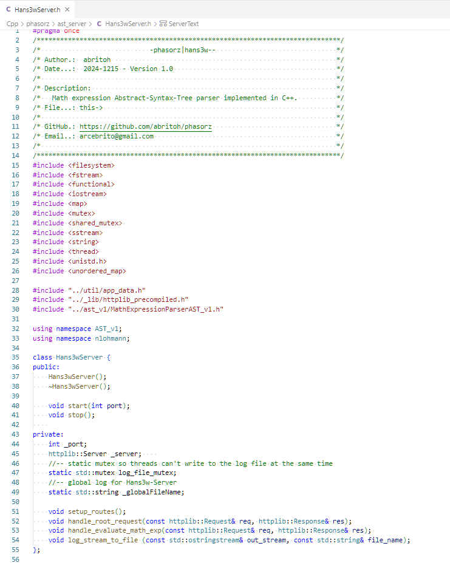
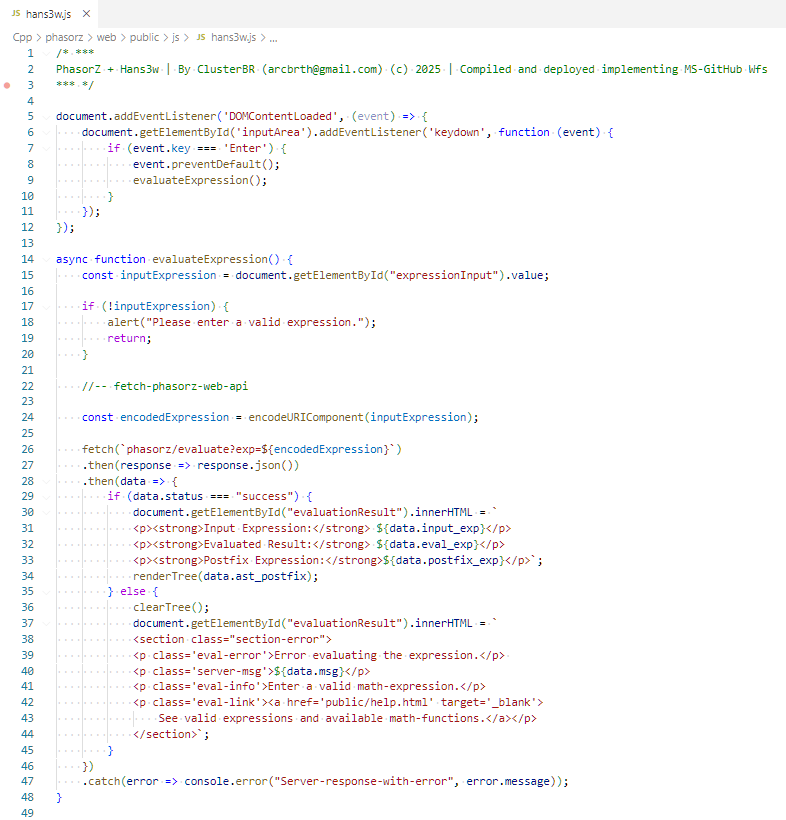

PhasorZ & Hansw3 | ClusterBR © 2025


|PhasorZ + Hans3w| is a light-weight yet robust, modern C++ application designed to parse,
compute, and visualize mathematical expressions.
PhasorZ handles the core mathematical parser, while Hans3w is the http-web
application.
The application can be executed either as a command-line utility or as a HTTP-web application, generating
dynamically
interactive results, for math-expression evaluation and Abstract Syntax Tree (AST) visualization.
This application was implemented in C++17, making use of the expressiveness,
multiparadigm-approach and efficiency of C++, encapsulating everything into a single executable that
can run on modern Linux and Windows operating systems as well as in docker-containers and cloud-engines.
Executable Versions
Abstract Syntax Tree - AST
- A Math Expression AST Parser takes a mathematical expression and converts it into an AST, which
is a tree structure representing the expression's components. The parser can then evaluate, simplify, or
transform the expression.
- Compilers and interpreters heavily rely on AST parsers to translate source code into an internal representation
that can be analyzed, optimized, and ultimately executed.
- In addition to compilers and interpreters, AST parsers are used in various other applications:
- Code analysis and refactoring: ASTs enable static code analysis tools.
- Code generation: ASTs can be transformed into other programming languages or intermediate
representations. For example, JavaScript code can be compiled into machine code or bytecode for platforms like
Node.js or browsers.
- Mathematical Expression Evaluation: As discussed earlier, ASTs are used in parsers for
mathematical expression solvers, symbolic algebra systems (e.g., Wolfram Alpha, SymPy), and calculators.
- Documentation generation: Tools like Javadoc use ASTs to extract documentation comments
from code and generate API documentation.
- Security analysis: ASTs are used in security tools (e.g., static analyzers) to check for
vulnerabilities or unsafe code patterns by understanding the structure of the code.
Math operations and functions for PhasorZ version 1.0
PhasorZ
- A lightweight yet effective C++ expression parser to handle math tasks.
Commands:
math-expression : Default evaluate the math-expression
help : Display this help message.
exit : Quit the application.
'expression' mode allows to enter valid math expressions.
operators: '+', '-', '*', '/', '^', '%'
functions: sin, cos, tan, sqrt(num), abs(num), pow(num1,num2)
$phasorz > 60 * 60 * 24 * 365 + (1-3) / (3-1) * sqrt(144) * (9)
Type expressions or commands after '$phasorz >'.
Execute PhasorZ as CLI Utility
> phasorz.exe

Execute PhasorZ as WebServer (Hansw3)
- Port parameter is optional (--port=9090)
- If no port parameter provided will use the provided by environmental-variables (PORT).
- Otherwise will use the default application port (9090).
- To run the Http server-mode the folder **web** is required
- And must be in the same folder as the **phasorz.exe** (Windows) or **phasorz** (Linux) executable
- The executable is near to 1MB large, plus the size of the **web** folder.
> phasorz.exe --web [--port=9090]


Hansw3 http-web application dependencies
- Hansw3 http-web application uses the following C++ dependencies:
Source-code Screenshots




arcebrito@gmail.com
| ClusterBR (c) 2025